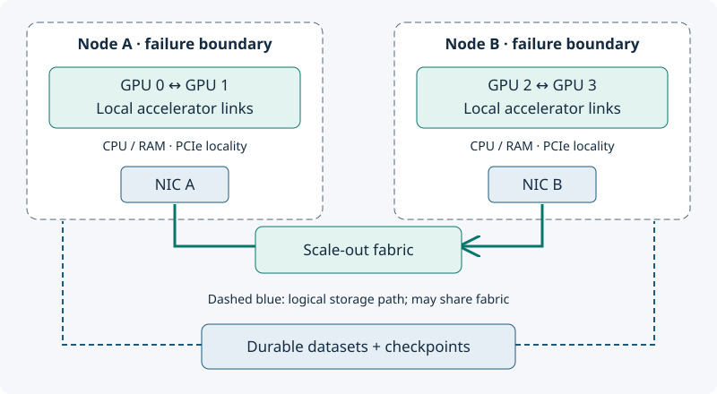

Designing the cluster and network
A cluster with enough GPUs can still be the wrong cluster. The distance between communicating workers can determine how much time they spend waiting.
By the end you can…
Distinguish scale-up links from scale-out fabrics, reason about oversubscription, and map topology requirements to cloud and self-managed options.
1. Start inside the node
A node contains CPU sockets, host RAM, accelerators and NICs. NUMA locality describes which CPU and memory resources are closer to each other. PCIe attachment and accelerator links determine transfer paths. Two GPUs in the same node are not necessarily connected by equally fast paths.
Scale-up joins accelerators within a tightly connected domain, often inside a server but sometimes spanning servers in rack-scale designs. Examples include NVIDIA NVLink/NVSwitch and AMD accelerator interconnects. Scale-out connects those domains through NICs and a switched fabric. Read the actual server or VM topology rather than assuming the node boundary defines every fast link.

2. Understand bandwidth and oversubscription
In a leaf/spine topology, nodes attach to leaf switches and leaf switches connect through spine switches. Oversubscription compares offered access bandwidth with available uplink bandwidth. Four nodes offering 100 Gb/s each through 200 Gb/s of shared uplinks create a 2:1 potential bottleneck when their traffic crosses those uplinks simultaneously.
100 Gb/s is at most 12.5 GB/s before overhead. Moving 20 GB over that path takes at least 1.6 seconds; this is a serialization lower bound, not an all-reduce prediction. Message sizes, latency, multiple links, collective algorithms, contention and protocol overhead matter. Adding a second NIC only helps if placement and software use it effectively.
3. RDMA is a capability, not a speed guarantee
Remote direct memory access allows supported transfers with less CPU involvement. InfiniBand and RDMA over Converged Ethernet (RoCE) provide different fabric approaches. GPU-direct paths require compatible hardware, drivers and software configuration. RoCE performance also depends on congestion management; link speed alone does not validate the fabric.
Ordinary TCP can be adequate for independent inference replicas or small distributed workloads. Large, tightly coupled training or cross-node model-parallel inference may justify specialized networking. Test representative collective sizes and topology, then test the actual workload. A Kubernetes Service routes application traffic; it is not a replacement for a configured accelerator collective fabric.
4. Co-locate within a job; spread independent replicas
Our training team places communicating workers close together and persists checkpoints beyond their failure boundary. Stretching one synchronous job across zones can impose latency and transfer costs. Our inference team keeps each model-parallel replica internally close, then spreads independent complete replicas across the failure domains required by the service target.
In a self-managed rack, also budget power delivery, cooling, rack density, NICs, switches, optics, spare parts and provisioning time. Usable capacity is limited by the scarcest of these, not only the accelerator purchase order.
5. Vendor-neutral requirements, cloud examples
| Environment | Examples to investigate | Verify before selecting |
|---|---|---|
| AWS | Accelerated EC2 instances; EFA on supported configurations; cluster placement options | Exact GPU/NIC bundle, EFA software, placement and reservation support |
| Azure | GPU VM families; supported ND-series configurations with InfiniBand | Exact SKU topology, scale-set requirements, region and family quota |
| Google Cloud | Accelerator-optimized machines; AI Hypercomputer topology and provisioning options | Machine-specific fabric, dense allocation, supported consumption options |
| Self-managed | Accelerator servers plus Ethernet/RoCE or InfiniBand fabric | End-to-end topology, congestion, power/cooling and operational ownership |
These are role mappings, not feature parity or an exhaustive SKU list. Cloud examples reviewed November 2026. Quota approval and a discount commitment do not by themselves prove physically available capacity.
Work it yourself
Two inference replicas each use four tightly coupled GPUs. Should all eight GPUs share one node for availability?
Worked answer
That may improve local communication, but one node failure removes both replicas. Keep each replica internally local and place complete replicas on different nodes or failure domains. Reserve enough surviving capacity; placement alone does not create headroom.
Interview practice
“How would you investigate poor cross-node training performance?”
A strong answer
Compare single-node and multi-node step times, then inspect rank placement, GPU/NIC locality, negotiated link speeds, collective performance, congestion and errors. Correlate stragglers with input stalls and hardware telemetry before attributing everything to the fabric.
Sources and deeper reading
- NCCL network troubleshooting — RDMA, congestion and diagnostics.
- AWS: EFA and NCCL.
- Azure ND family.
- Google Cloud accelerator-optimized machines.